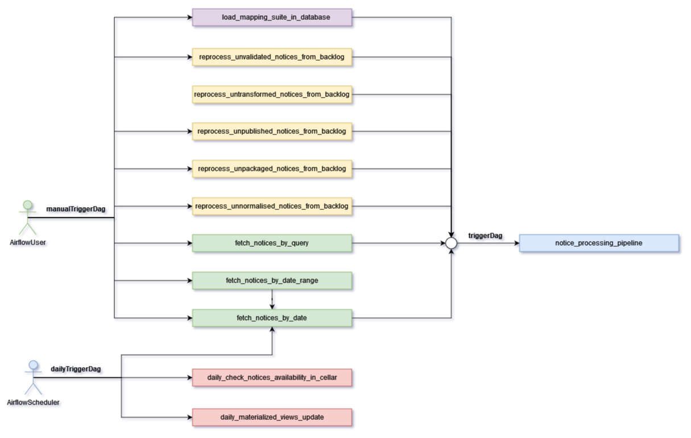

System overview
This section provides a high level overview of the TED-SWS system and its components. As presented in the image below the system is built by multitude of services / components grouped together to help to reach the end goal. The system can be divided into 2 main parts:
-
Controlling and monitoring
-
Core functionality (code base / TED SWS pipeline)
Each part of the system is formed by a group of components.
Controlling and monitoring, controlled by an operation manager, contains a workflow / pipeline management service (Airflow) and data visualization service (Metabase). Using this group of services any user should be able to control execution of the existing pipelines and also monitor the execution results.
The core functionality has many services developed to accommodate the entire transformation process of a public procurement notice (in XML format) available on the TED Website into RDF format and to publish it into CELLAR. Here is a short description of some of the main services:
-
fetching service - fetching the notice from TED website
-
indexing service - getting the unique XPATHs in a notice XML
-
metadata normalisation service - extract notice metadata from the XML
-
transformation service - transform the XML to RDF
-
entity resolution and deduplication service - resolve duplicated entities in the RDF
-
validation service - validation the RDF transformation
-
packaging service - creating the METS package
-
publishing service - sending the METS package to CELLAR

Pipelines structure ( Airflow DAGs )
In this section will see a graphic representation that will show the flow and dependencies of the available pipelines (DAGs) in Airflow. In this representation will see the presence of two users AirflowUser and AirflowScheduler, where the AirflowUser is the user that will enable and trigger the DAGs and AirflowScheduler is the Airflow component that will start the DAGs automatically following a schedule.
The automatic triggered DAGs controlled by the Airflow Scheduler are:
-
fetch_notices_by_date
-
daily_check_notices_availibility_in_cellar
-
daily_materialized_views_update

The DAGs marked with purple (load_mapping_suite_in_database), yellow (reprocess_unnormalised_notices_from_backlog,reprocess_unpackaged_notices_from_backlog, reprocess_unpublished_notices_from_backlog,reprocess_untransformed_notices_from_backlog, reprocess_unvalidated_notices_from_backlog) and green (fetch_notices_by_date, fetch_notices_by_date_range, fetch_notices_by_query) will trigger automatically the notice_processing_pipeline marked with blue, and this will take care of the entire processing steps for a notice. These can be used by a user by manually triggering these DAGs with or without configuration.
The DAGs marked with green (fetch_notices_by_date, fetch_notices_by_date_range, fetch_notices_by_query) are in charge of fetching the notices from TED API. The ones marked with yellow ( reprocess_unnormalised_notices_from_backlog, reprocess_unpackaged_notices_from_backlog, reprocess_unpublished_notices_from_backlog, reprocess_untransformed_notices_from_backlog, reprocess_unvalidated_notices_from_backlog) will handle the reprocessing of notices from the backlog. The purple marked DAG (load_mapping_suite_in_database) will handle the loading of mapping suites in the database that will be used to transform the notices.
Notice statuses
During the transformation process through the TED-SWS system, a notice will start with a certain status and it will transition to other statuses when a particular step of the pipeline (notice_processing_pipeline) offered by the system has completed successfully or unsuccessfully. This transition is done automatically and it will change the status property of a notice. The system has the following statuses:
-
RAW
-
INDEXED
-
NORMALISED_METADATA
-
INELIGIBLE_FOR_TRANSFORMATION
-
ELIGIBLE_FOR_TRANSFORMATION
-
PREPROCESSED_FOR_TRANSFORMATION
-
TRANSFORMED
-
DISTILLED
-
VALIDATED
-
INELIGIBLE_FOR_PACKAGING
-
ELIGIBLE_FOR_PACKAGING
-
PACKAGED
-
INELIGIBLE_FOR_PUBLISHING
-
ELIGIBLE_FOR_PUBLISHING
-
PUBLISHED
-
PUBLICLY_UNAVAILABLE
-
PUBLICLY_AVAILABLE
The transition from one status to another is decided by the system and can be viewed in the graphic representation below.

Notice structure
This section aims at presenting the anatomy of a Notice in the TED-SWS system and the dependence of structural elements on the phase of the transformation process. This is useful for the user to understand what happens behind the scene and what information is available in the database, to build analytics dashboards.
The structure of a notice within the TED-SWS system consists of the following structural elements:
-
Status
-
Metadata
-
Original Metadata
-
Normalised Metadata
-
-
Manifestation
-
XMLManifestation
-
RDFManifestation
-
METSManifestation
-
-
Validation Report
-
XPATH Coverage Validation
-
SHACL Validation
-
SPARQL Validation
-
The diagram below shows the high level structure of the Notice object and that certain structural parts of a notice within the system are dependent on its state. This means that as the transformation process runs through its steps the Notice state changes and new structural parts are added. For example, for a notice in the NORMALISED status we can access the Original Metadata, Normalised Metadata and XMLManifestation fields, for a notice in the TRANSFORMED status we can access in addition the RDFManifestation field and similarly for the rest of the statuses.
The diagram depicts states as swim-lanes while the structural elements are depicted as ArchiMate Business Objects [cite ArchiMate]. The relations we use are composition (arrow with diamond ending) and inheritance (arrow with full triangle ending).
As was mentioned above about the states through which a notice can transition, a certain structural field if it is present at a certain state, then all the states originating from this state will also have this field. Not all possible states are depicted. For brevity, we chose only the most significant ones, which segment the transformation process into stages.